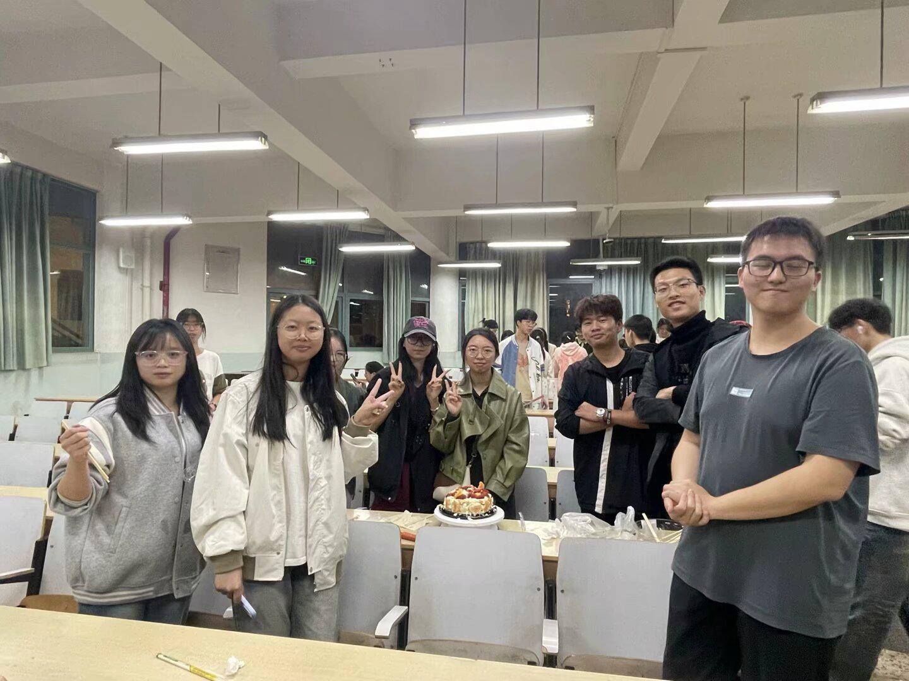
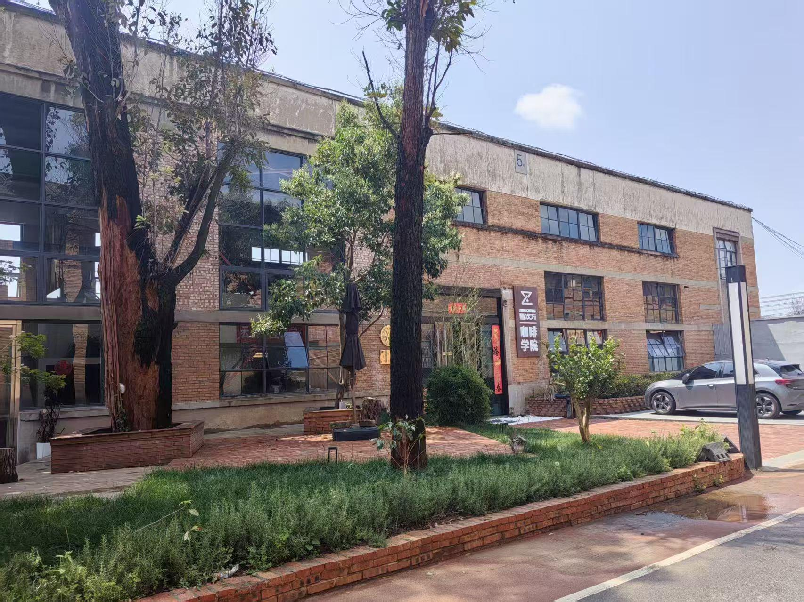
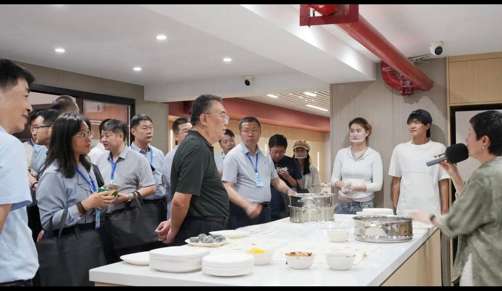
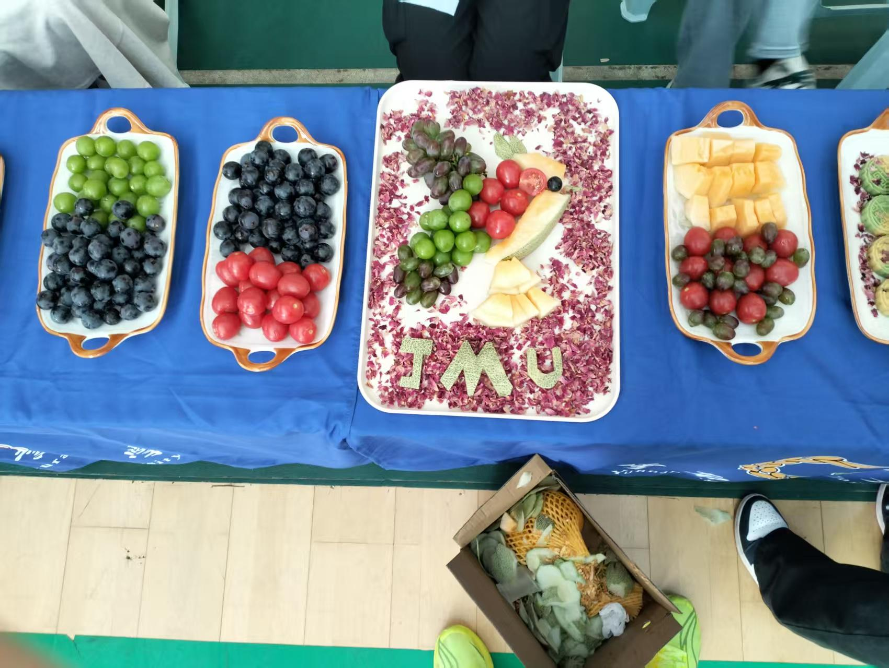

营销部
负责营销宣传，发布各种活动。

关于我们
本社团成立于云南农业大学，以探索美食文化、实践食品制作、交流饮食知识为宗旨。
社团面向全校热爱美食的同学，定期开展甜品烘焙、传统小吃制作、食材品鉴、食品科普等特色活动。依托学校食品相关专业资源，我们将理论知识与动手实践相结合，鼓励成员亲手制作各类美食，分享烹饪技巧。
社团持续打造美食分享会、创意美食大赛等品牌活动，营造轻松友好的交流氛围。社团旨在丰富校园课余生活，拓宽同学们饮食文化视野，提升动手实践能力。未来社团将持续创新活动形式，挖掘各地特色美食，搭建美食爱好者交流平台，带动更多同学感受美食带来的乐趣。
团队组成
负责营销宣传，发布各种活动。
负责人力分配，组织协调。
负责人员活动协调。
负责工作交接，人员对接。
负责摄影、文案编辑等后期工作。
活动剪影
活动纪实
01 · 大赛
西区共享厨房 · 2025年5月
本社团面向全校美食爱好者，以传承美食文化、动手实践制作为宗旨，常态化开展美食实操、食材品鉴活动，着力打造美食文化大赛品牌活动。依托校内专业资源，搭建交流平台，丰富校园生活，带领同学们感受美食与饮食文化的独特魅力。

2026 / 0602 · 实操
咖啡学院 · 2026年6月
咖啡拉花制作活动面向全校咖啡爱好者开展。活动讲解基础咖啡知识，示范拉花实操技巧，组织大家动手练习。以体验实操的形式感受咖啡文化，提升动手能力，为同学们提供轻松的交流平台。

2026 / 0503 · 传统
西校区共享厨房 · 2026年5月
绿豆糕制作活动面向全校美食爱好者开展。活动讲解传统糕点制作流程，演示馅料调配、压模成型等操作，组织同学们亲手制作绿豆糕。感受中式传统点心文化，体验手工烘焙乐趣，搭建美食交流平台。
04 · 宣讲
厚德楼 · 2025年10月
健康饮食知识宣讲面向全校学生开展。围绕合理膳食、食品营养、科学饮食习惯开展科普分享，帮助大家树立健康饮食观念。普及饮食常识，引导同学们均衡饮食，养成良好的生活饮食习惯。

2026 / 0505 · 文化
西校区体操馆 · 2026年5月
美食文化交流接待活动面向来访外宾开展。通过展示特色滇味美食，现场制作、品鉴传统点心，向外宾介绍中华饮食与云南饮食文化。以美食为纽带搭建沟通桥梁，展现校园风貌，促进中外文化交流。